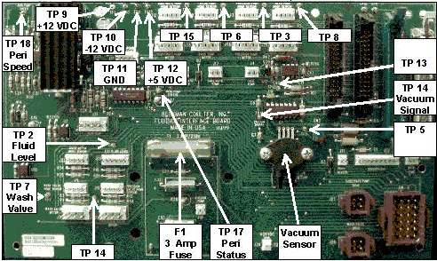
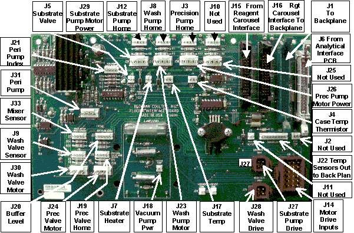
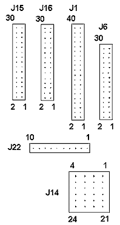

PCB - Fluidics Interface
Purpose
This document provides information regarding the Fluidics PCB for instruments with Revision B fluidics.
Notes
Important notes pertaining to the Fluidics PCB:
- Some versions of the Fluidics PCB have a vacuum sensor with 2 ports. The vacuum tubing should be connected to the left port.
- The vacuum sensor can be ordered separately and is field replaceable on most Fluidics Interface PCBs.
- Sensor signals from the Sample / Reagent Carousel Interface PCB and the Analytical Interface PCB pass through the Fluidics Interface PCB.
Fuse Specifications
Note: This fuse can be replaced with any fuse having the same rating as the original fuse.
| Fuse / Circuit | Littlefuse PN | Description / Rating | Circuit |
|---|---|---|---|
| F1 (+24 V DC) | 313003 | 3 A, 250 V, Slow Blow | Vacuum Pump |
Peristaltic Pump Control Circuitry
This section provides a list of peristaltic pump command sources.
- The Peristaltic Pump motor drive signals are generated by a motor driver chip on the Fluidics PCB.
- The ground wire for the Peri Pump motor power is attached to the heat sink at the top front of the Fluidics PCB. It then goes to a screw at the middle of the Backplane PCB. The motor will not run if the ground wire is not attached.
- The run/stop signal comes from the I/O PCB J17-B29 through the backplane to J18-11 to the Power Driver PCB then out through P3-7 on the System Power Harness to J14-14 on the Fluidics PCB, then to U10 pin 1 (lower right pin). The enable signal grounds U10 pin 1 to enable/run for the Peri Pump motor.
- The Peri Pump index sensor output from J31-3 goes to U8. U8 provides a 0V (running) or 5V (not running) signal to the I/O PCB. The signal goes through J16-4 to Backplane PCB J22-4 and then through J17-C23 to the I/O PCB. The index signal is also tied to J2-3 on the Sample/Reagent I/F PCB through ribbon cable J15-4 / J16-4. A bent pin at J2-3 on the Sample Reagent I/F PCB can short the index sensor signal to ground and cause a "peri pump is running" error.
Signal and Voltage Test Points

| TP | Signal |
|---|---|
| 1 | Fluids Tray Buffer Level Sensor Output |
| 2 | Fluids Tray Waste Level Sensor Output |
| 3 | Precision Pump Home Sensor Output |
| 4 | Precision Valve Home Sensor Output |
| 5 | Vacuum Sensor Offset ( - ) |
| 6 | Wash Pump Home Sensor Output |
| 7 | Wash Valve Home Sensor Output |
| 8 | Not Used |
| 9 | +12 V DC |
| 10 | -12 V DC |
| 11 | Ground
Note:
|
| 12 | +5 V DC |
| 13 | Vacuum Sensor Offset ( + ) |
| 14 | Vacuum Sensor Output Signal (Millivolt signal from vacuum sensor amp U1) |
| 15 | Substrate Pump Home Sensor |
| 16 | Mixer Motor Index Sensor Output |
| 17 | Peristaltic Pump Status (Index wheel rotation monitor) |
| 18 | Peristaltic Pump Speed |
Connectors

Connector Pin Numbering

J1 Pin Outs
Note: J1 connects to J25 on the Backplane PCB.
| Pin | Signal / Voltage | Pin | Signal / Voltage |
|---|---|---|---|
| 1 - 6 | +5 V DC | 28 | Wash Wheel Index Sensor |
| 7 - 8 | +12 V DC | 29 | N/C |
| 9 - 10 | -12 V DC | 30 | Rake Index |
| 11 - 18 | Ground | 31 | Shuttle Index |
| 19 | Incubator Belt Index Sensor | 32 | Rake Home |
| 20 | Waste Bag | 33 | Wash Pump Home Sensor |
| 21 | Incubator Belt Home Sensor | 34 | Waste Fluid Level Sensor |
| 22 | Wash Arm Home | 35 | Wash Buffer Fluid Level Sensor |
| 23 | Vessel Door | 36 | Precision Valve Home Sensor |
| 24 | RV Sensor 1 | 37 | Neph Pump Home Sensor |
| 25 | RV Sensor 2 | 38 | Substrate Pump Home Sensor |
| 26 | Mixer Motor Speed | 39 | Wash Valve Home Sensor |
| 27 | Wash Wheel Home Sensor | 40 | Precision Pump Home Sensor |
J6 Pin Outs
Note: J6 connects to J1 on the Analytical Module Interface PCB. The signals from J6 pass through the Fluidics Interface PCB and are routed out through connector J1 to J25 on the Backplane PCB.
| Pin | Signal / Voltage | Pin | Signal / Voltage |
|---|---|---|---|
| 1 - 9 | + 5 VDC | 26 | Spare |
| 10 - 18 | Ground | 27 | Rake Index Sensor |
| 19 | Incubator Belt Index Sensor | 28 | Rake Home Sensor |
| 20 | Incubator Belt Home Sensor | 29 | Shuttle Index/Home Sensor |
| 21 | Wash Wheel Motor Index | 30 | RV Sensor 1 |
| 22 | Wash Wheel Motor Home | 31 | RV Sensor 2 |
| 23 | Wash Pipettor Z Home | 32 | Not used |
| 24 | Spare | 33 | Waste Bag Sensor |
| 25 | Spare | 34 | Vessel Load Door Sensor |
J14 Pin Outs
Note: J14 connects to the System Power Harness coming from the Stepper Motor Driver and Power Driver PCBs.
| Pin | Signal / Voltage | Pin | Signal / Voltage |
|---|---|---|---|
| 1 | Wash Pump Motor Winding Signal 1 | 13 | Bulk Fluid Heater On - Not Used |
| 2 | Wash Pump Motor Winding Signal 2 | 14 | Peristaltic Pump Enable |
| 3 | Wash Pump Motor Winding Signal 3 | 15 | Vacuum Pump Enable |
| 4 | Wash Pump Motor Winding Signal 4 | 16 | Precision Pump Motor Winding Signal 1 |
| 5 | Precision Valve Motor Winding Signal 1 | 17 | Precision Pump Motor Winding Signal 2 |
| 6 | Precision Valve Motor Winding Signal 2 | 18 | Precision Pump Motor Winding Signal 3 |
| 7 | Precision Valve Motor Winding Signal 3 | 19 | Precision Pump Motor Winding Signal 4 |
| 8 | Precision Valve Motor Winding Signal 4 | 20 | +24 V DC |
| 9 | Neph Pump Motor - Not Used | 21 | Ground |
| 10 | Neph Pump Motor - Not Used | 22 | +24 V DC |
| 11 | Neph Pump Motor - Not Used | 23 | Substrate Valve On |
| 12 | Neph Pump Motor - Not Used | 24 | Substrate Heater On |
J15 - J16 Pin Outs
Note: These two connectors are a pass through for the Sample / Reagent Carousel signals. J15 connects to J1 on the Sample / Reagent Carousel. The signals from J15 go to J16 and then go to J22 on the Backplane PCB. Refer to connector J1 on the
PCB - Sample / Reagent Carousel Interface document for signal details.
J22 Pin Outs
Note: This connector carries the temperature and vacuum sensor outputs from the Fluidics PCB to the backplane PCB where it joins other temperature cables at J19.
| Pin | Signal / Voltage |
|---|---|
| 1 | No Longer Used - Was Bulk Fluid Heater High |
| 2 | No Longer Used - Was Bulk Fluid Heater Low |
| 3 | Case Temperature High |
| 4 | Case Temperature Low |
| 5 | Substrate Heater Temperature High |
| 6 | Substrate Heater Temperature Low |
| 7 | Ground |
| 8 | Vacuum Signal |
| 9 | Shield |
| 10 | Not Used |